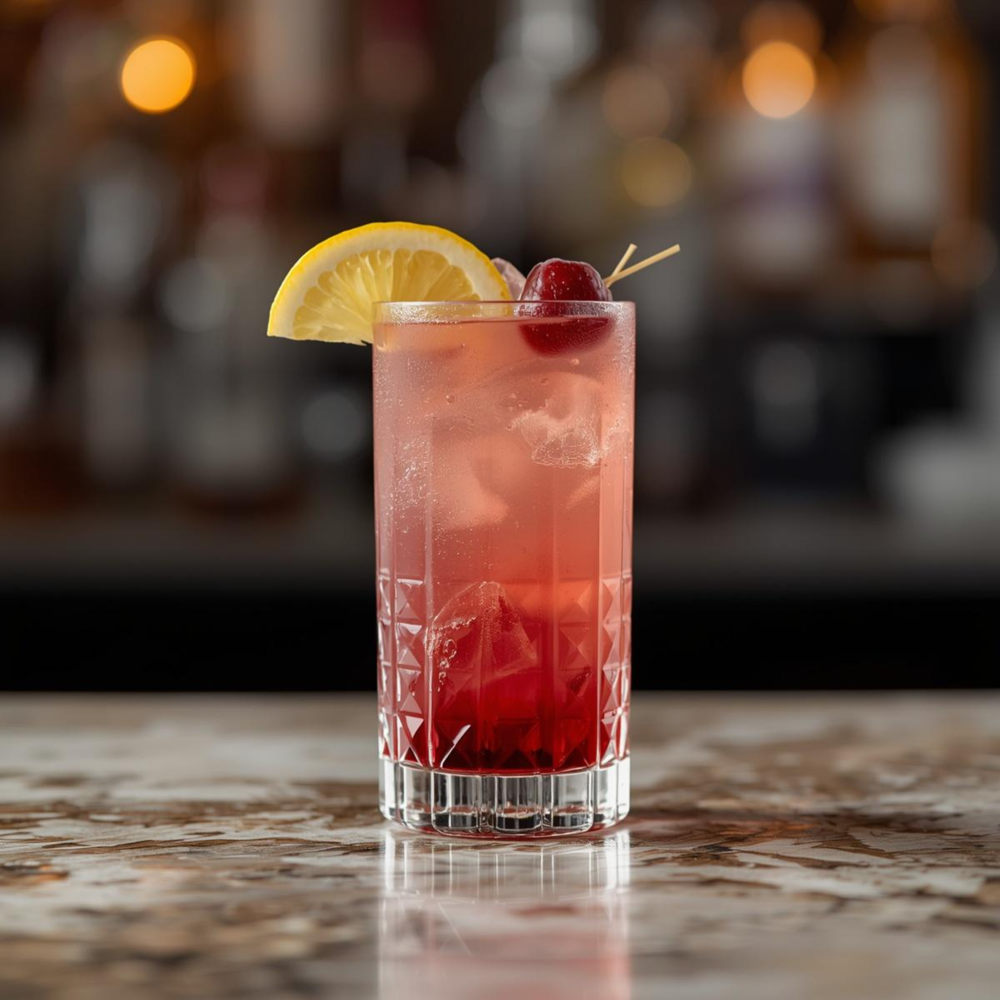
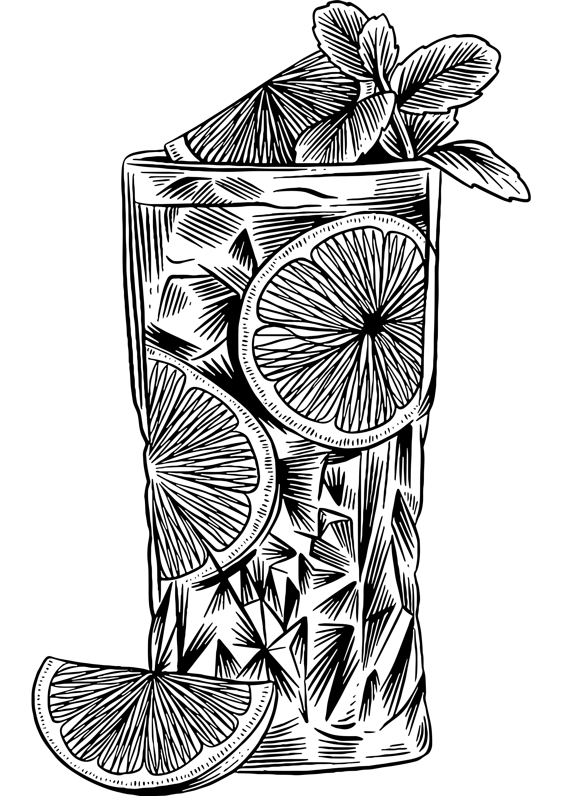

Nuit Royale 🍹
Une bulle royale où la richesse du cassis et la chaleur du rhum rencontrent la fraîcheur du citron, sublimées par l’élégance du champagne. Intense, festif et résolument sophistiqué.

🥃 Ingrédients
- 5 cl Rhum
- 1 cl Crème de cassis
- 2 cl Jus de citron
- 2 cl Sirop de sucre de canne
- 3 cl Champagne
🍸 Verre

Long tumbler🧊 Préparation
 Shaker
Shaker
- Remplir un shaker de glace
- Ajouter le rhum, la crème de cassis, le jus de citron et le sirop
- Shaker énergiquement
- Filtrer dans un verre rempli de glace
- Compléter délicatement avec le champagne
✨ Décoration
- Fruits rouges — 2 pièces
- Citron — 1/2 tranche